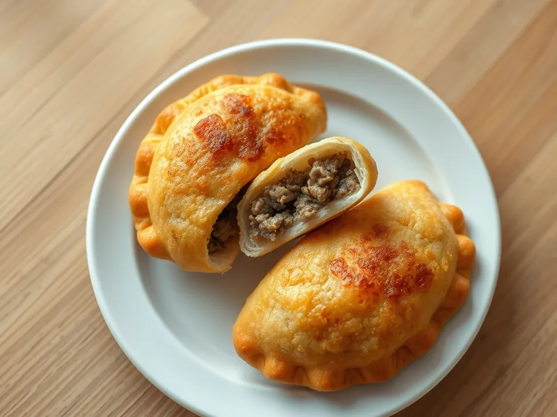

Ленивые чебуреки из лаваша с фаршем
Сочные чебуреки без теста: фарш с луком в тонком лаваше, обжаренный на сковороде
25 мин2 порц.736 ккал на порциюБ 31 · Ж 43 · У 55Татарская кухня
Открыть в приложении: порции, таймеры, список покупок
Продукты на 2 порц.
- Лаваш тонкий2 шт
- Фарш свино-говяжий220 г
- Лук репчатый1 шт
- Вода30 мл
- Яйцо куриное1 шт
- Растительное масло2 ст. л.
- Соль1 щеп.
- Перец чёрный молотыйпо вкусу
- Кинза по желаниюпо вкусу
Как готовить
- Натрите лук на мелкой тёрке, смешайте с фаршем, водой, солью, перцем и зеленью до сочной массы, 4 минуты.
- Разрежьте каждый лаваш на 3 прямоугольника, взбейте яйцо.
- Тонким слоем намажьте фарш на половину каждого куска, края смажьте яйцом и сложите пополам, прижимая края.
- Разогрейте масло на сковороде на среднем огне 2 минуты.
- Жарьте чебуреки по 4-5 минут с каждой стороны, пока они не станут золотистыми, а фарш внутри не перестанет быть розовым.
- Выложите на бумажное полотенце, чтобы ушёл лишний жир.
Совет. Вода в фарше даёт тот самый сок, как в настоящих чебуреках. Слой фарша делайте тонким, иначе лаваш сгорит раньше, чем прожарится мясо.